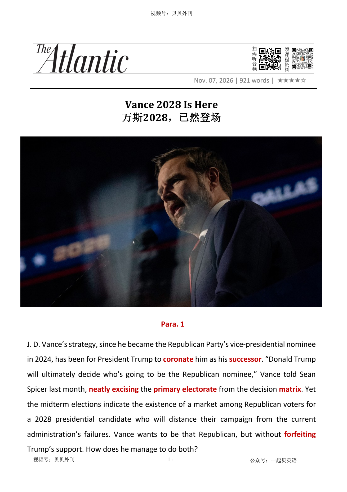

02 HEADLINE / 标题中英文解释
Vance 2028 Is Here
万斯2028，已然登场

Vance 2028 Is Here
万斯2028，已然登场
文章分析J.D.万斯如何在共和党中期选举惨败后，同时为2028年总统竞选铺路。
他长期希望特朗普亲自将他确立为政治接班人，但选举结果表明，共和党选民也可能寻找一位能与现政府失败拉开距离的候选人。
万斯面临的难题，是如何切割责任，却又不失去特朗普的支持。
他的核心策略是把败选几乎全部归咎于伊朗战争。
这个解释有一定事实基础：战争违背了特朗普避免海外泥潭的承诺，还推高了燃料和生活成本。
更重要的是，特朗普本人也愿意把油价问题归咎于伊朗，特朗普的儿子也公开认可万斯的说法。
因此，万斯可以承认共和党败选，却无需直接否定特朗普。
这套叙事还能打击万斯潜在的2028年对手、国务卿马可·鲁比奥。
如果战争是败选的根源，那么负责外交政策的鲁比奥和共和党鹰派便更容易被追责。
同时，万斯回避了关税、大规模驱逐移民、腐败、富人减税和削减低收入者福利等国内问题，因为他自己曾为这些政策辩护。
在移民议题上，万斯拒绝承认政府的铁腕执法疏远了拉美裔选民，而是把党内批评者描绘成鼓吹“大赦”的建制派。
这一标签也会伤及曾支持过移民改革的鲁比奥。
万斯提出的四项诉求是结束战争、降低生活成本、重回“美国优先”和调整对以色列关系，其共同叙事是以色列把特朗普拖入了战争。
作者对此持批判态度。
以色列的游说确实可能影响特朗普，但特朗普多年来本就支持对伊朗动武，也在其他军事行动后变得更愿意使用武力。
文章认为，把一切归咎于战争和内塔尼亚胡，是万斯维系MAGA联盟、排挤竞争对手并把自己包装成“无战争特朗普主义”接班人的政治算计。
The article explains how J. D. Vance may be preparing for the 2028 presidential election. Vance wants Donald Trump to choose him as the next Republican leader.
However, the midterm defeat showed that some Republican voters may want a candidate who is less closely connected to the government's failures. Vance therefore needs to separate himself from the defeat without losing Trump's support.
His main answer is to blame the Iran war. The war broke Trump's promise to avoid long foreign conflicts and it also raised fuel prices and living costs.
Trump himself has blamed Iran for high petrol prices, so Vance can criticise the war without directly attacking the president. Trump's son also publicly supported Vance's message.
This argument may also weaken Marco Rubio, a possible rival in 2028. Rubio is secretary of state and is known for strong foreign-policy views.
If the war caused the defeat, voters may blame Rubio and other foreign-policy hawks. At the same time, Vance avoids talking about tariffs, mass deportations, corruption, tax cuts for the rich and cuts to help for poor families.
He supported many of these policies himself. Vance also argues about immigration.
Some Republicans say that harsh enforcement pushed Latino voters away. Vance answers that party leaders should not support amnesty.
This word can be used against Rubio because he once supported an immigration-reform plan that included a path to legal status. Vance says unhappy voters will return if the government ends the war, lowers living costs, follows America First and changes its relationship with Israel.
The writer accepts that Israel may have influenced Trump, but says Trump has wanted to attack Iran for many years. The article's main point is that Vance is using the war to protect his place in the MAGA movement, attack a rival and present himself as the future leader of Trumpism without war.
万斯的竞选难题（Para 1） ├─ 目标：争取成为特朗普继任者 └─ 矛盾：既要脱离败局责任，又要保住特朗普支持 甩锅伊朗战争的策略（Para 2-6） ├─ 核心说辞：选举失利根源是伊朗战争 ├─ 优势一：契合部分事实、获得特朗普阵营认可 └─ 优势二：打压对手卢比奥，回避其他政策弊病 移民议题的派系攻防（Para 7-8） ├─ 反驳党内批评：拒绝移民大赦标签 └─ 用意：借“大赦”攻击卢比奥一派 拉拢选民的四点诉求（Para 9-11） ├─ 选民诉求：停战、控通胀、美国优先、调整对以关系 ├─ 叙事逻辑：以色列诱导美国卷入战争 └─ 漏洞：忽略特朗普本身的对伊强硬倾向 万斯的政治野心（Para 12-13） ├─ 叙事包装：只微调路线，保留原有保守政策 └─ 最终指向：由他承接后特朗普时代的MAGA阵营
J. D. Vance’s strategy, since he became the Republican Party’s vice-presidential nominee in 2024, has been for President Trump to coronate正式确立为继任者 him as his successor继任者；接班人. “Donald Trump will ultimately decide who’s going to be the Republican nominee,” Vance told Sean Spicer last month, neatly excising删除；剔除 the primary党内初选 electorate全体选民 from the decision matrix决策框架；考量体系. Yet the midterm elections indicate the existence of a market among Republican voters for a 2028 presidential candidate who will distance their campaign from the current administration’s failures. Vance wants to be that Republican, but without forfeiting失去；放弃 Trump’s support. How does he manage to do both?
自2024年成为共和党副总统候选人以来，J.D.万斯的政治布局就围绕着一个目标：让特朗普亲自加冕，将自己确立为他的接班人。上个月，万斯在接受肖恩·斯派塞（前白宫新闻发言人）采访时直言：“最终，谁能成为共和党总统候选人，将由特朗普决定。”这番话干净利落地将初选选民排除在了决定的考量之外。然而，中期选举的结果表明，共和党选民中正在形成一种新的政治需求：他们希望2028年的总统候选人能够与本届政府的种种失政拉开距离。万斯希望成为这样一位候选人，却又不愿因此失去特朗普的支持。那他究竟要如何兼顾这两者呢？
Blame everything on the Iran war. That is what Vance shrewdly, if disingenuously, has done. In a lengthy很长的 post on X, the vice president fully conceded承认 that his party had been routed彻底击败, and that “many people who voted for Trump/Vance in 2024 voted for Democrats in 2026.” You often see analysts describing the 2024 Republican presidential electorate as “Trump voters,” but Vance understandably可以理解地 avoided this shorthand简略的表达方式. He reduced the disaster to a single cause, writing: “The reason we lost is the war. The president himself said so last night.”
把所有问题都归咎于伊朗战争。这正是万斯颇为精明、却也带有几分虚伪的策略。在X平台发表的一篇长文中，这位副总统坦然承认，共和党遭遇了惨败，而且“许多在2024年投票支持特朗普/万斯组合的人，在2026年转而投票给了民主党”。分析人士往往将2024年共和党总统选举的支持者简称为“特朗普选民”，但万斯显然有意避开了这一简化叫法。他将这场政治灾难归结为单一原因，并写道：“我们败选的根源在于战争。这一点，总统昨晚已亲口承认。”
This argument has several advantages. First, it is partially correct. The Iran war has been a political debacle惨败；彻底失败, both because it violated违背；违反 Trump’s oft-stated反复声明的 promise to avoid quagmires难以脱身的泥潭 and because it drove up the cost of fuel and other goods.
此番论调堪称一石多鸟，其一，它切中了部分事实。伊朗战争确实是一场政治噩梦：一方面它彻底撕毁了特朗普“远离泥潭”的反复承诺，另一方面则推高了油价与各类商品的物价。
Second, and of equal importance, Trump likely agrees with this critique批评；评论. The president has been publicly blaming Iran for months, while defensively insisting that the cost has been minor较小的, temporary (the conflict has been two weeks away from ending since it began), and necessary to avoid nuclear cataclysm大灾难；剧变. In a Fox News interview last night, Trump insisted, “We actually have the greatest economy,” but “because of the gasoline price, people don’t see it as much as they would have without it. And the gasoline was caused by Iran.” Donald Trump Jr. quickly shared Vance’s post, commenting, “Every word of this is 💯 💯 💯,” stamping在…上盖 the royal family’s quasi-official imprimatur正式批准；认可 on Vance’s concession认错；让步.
其次，同样重要的是，特朗普很可能也认同这种批评。几个月来，总统一直公开将责任推给伊朗，同时又竭力辩称，战争造成的代价微不足道、只是暂时的，而且是避免核灾难所必须付出的代价。（自开战之日起，这场冲突就宣称“距离结束仅剩两周”。）昨晚在接受福克斯新闻采访时，特朗普坚称：“我们拥有最好的经济。”但他随即解释说：“因为汽油价格上涨，人们没能像原本那样充分感受到经济的好处。而汽油价格上涨，是伊朗造成的。”小唐纳德·特朗普（特朗普儿子）很快转发了万斯的这篇帖子，并评论道：“每一个字都百分之百正确。”这一表态无异于为万斯的认错之辞盖上了一枚来自特朗普家族的准官方印章。
Third, Vance’s argument aims to box out排挤；阻止参与 his most likely rival, Secretary of State Marco Rubio. If the war is the problem, then why would anybody prefer a Cabinet official whose entire job is foreign policy? Rubio is a well-known foreign-policy hawk鹰派人物, and blaming the hawks for snookering诱使陷入错误；困住 Trump into a mistake implicates表明……涉及或应负责 the Rubio wing党内派别 of the party for the midterm debacle.
第三，万斯的这套说辞意在封堵自己最有可能的竞争对手——国务卿鲁比奥。如果问题出在战争上，那么共和党选民又有什么理由选择一位毕生职责就是处理外交事务的内阁官员呢？鲁比奥向来以外交政策强硬派著称。而如果将责任归咎于那些怂恿特朗普犯下错误的鹰派，那么共和党内的鲁比奥一派，自然也就难辞其咎。
Fourth, Vance ignores every other way Trump dismantled瓦解；逐步拆除 the 2024 Republican coalition政治联盟. Tariffs? Mass deportation? Corruption? The gilded-palace binge狂热行动；放纵? A domestic agenda focused on cutting taxes for the rich, while throwing millions of low-income Americans off their health insurance and food stamps? Trump is not willing to cop to承认；坦承 mistakes on any of them, and Vance either justified为……辩护 or enthusiastically supported all of these errors, anyway.
第四，万斯对特朗普瓦解2024年共和党选民联盟的其他种种做法，选择了视而不见。关税呢？大规模驱逐移民呢？腐败呢？挥金如土的宫殿式建设狂潮呢？还有那套国内政策：一边为富人减税，一边却让数百万低收入美国人失去医疗保险和食品券？这些问题，特朗普没有一个愿意承认自己犯了错。而万斯当初不仅为这些政策辩护，甚至还曾热情拥护其中的每一项。
In his X post, Vance specifically tried to refute驳斥；否认 Republican critics who (correctly) believe that the administration’s ironfisted采取铁腕手段的 approach to immigration enforcement alienated使疏远；使失去支持 Latino美籍拉丁美洲裔男性 voters who had expected a narrower approach focused on deporting criminals. “Expect to hear any number of establishment建制派；当权精英 politicians say the solution to our woes is amnesty大赦；合法化安排,” Vance wrote. “I’m open to the idea that we should change enforcement—by focusing more on businesses that hire illegal labor, for instance. But anyone pushing amnesty is lying to you.”
在那篇X平台帖子中，万斯还特意反驳了共和党的批评者。这些人（合理地）认为，政府以铁腕手段推行移民执法，疏远了拉美裔选民；而这些选民原本期待的，只是一套范围更有限、重点打击犯罪移民的驱逐政策。万斯写道：“你们很快就会听到各种建制派政客声称，解决当前困境的办法是实行大赦。我并不排斥调整移民执法方式，比如将更多执法重点放在雇用非法劳工的企业身上。但任何鼓吹大赦的人，都是在欺骗你们。”
Amnesty” is not the only alternative可供选择的事物 to Stephen Miller’s plan of deploying hastily trained masked agents and encouraging them to use the roughest tactics策略. But amnesty was a feature of an immigration-reform plan that Rubio briefly supported during Barack Obama’s second term, a historical fact that might explain Vance’s eagerness to revive重新提起；恢复 the concept—as an epithet带攻击性的称呼 against his factional党内派系的 rivals.
然而，“大赦”并不是对斯蒂芬·米勒那套移民政策的唯一替代方案。那套政策主张部署训练仓促、蒙面执法的特工，并鼓励他们采取最粗暴的执法手段。事实上，大赦只是移民改革方案中的一种可能安排。奥巴马第二任期内，鲁比奥曾短暂支持过一项包含大赦条款的移民改革计划。或许正是这段历史，解释了万斯为何如此急于重新搬出“大赦”这个概念——要把它变成攻击党内派系对手的一顶帽子。
Vance’s post asserts断言；坚称 that a pollster民意调查人员 told him that disgruntled不满的；失望的 Trump voters—sorry, Trump/Vance voters—would “come back on our team” if the administration did four things: 1. End the war. 2. Focus on cost of living/ inflation. 3. Put America First. 4. Change our relationship to Israel.
万斯在帖子中还表示，一位民调专家曾告诉他，那些心怀不满的特朗普选民——抱歉，应该说是特朗普—万斯选民——只要政府做到以下四件事，就会“重新回到我们阵营”：结束战争。将重心转向生活成本和通胀问题。奉行“美国优先”。调整美国与以色列的关系。
From a certain point of view that is especially prominent重要的 on the online right, those four things can be reduced to one thing: Trump has to stop letting Israel manipulate操纵；诱导 him into foreign wars, and instead focus on making Americans rich. Conveniently for Vance, Trump appears open to this critique, having blurted out on Fox News yesterday that he now favors phasing out American aid to Israel.
从某种视角来看，尤其是从网络右翼颇为盛行的那套政治叙事来看，这四件事其实可以归结为一件事：特朗普必须停止任由以色列操纵自己，将美国拖入一场又一场对外战争，转而把精力放在让美国人富裕起来上。对万斯而言，这一论调可谓再合适不过。因为特朗普似乎也愿意接受这种批评。就在昨天，他在福克斯新闻的采访中脱口而出，称自己如今倾向于逐步取消美国对以色列的援助。
Vance is right to imply that Israel helped persuade Trump to go to war with Iran. But Israel’s advocacy公开倡议；游说 is not the only reason the Strait of Hormuz has been closed. Trump has argued on and off断断续续地 for attacking Iran since it emerged as an American bête noir during the hostage人质 crisis that began in 1979, when Trump’s short list of immutable不可改变的 beliefs about the world first formed. Trump also seemed to drop his inhibitions顾虑；心理阻碍 about the use of military force after the kidnapping劫持 of Nicolás Maduro left him giddy因兴奋而忘乎所以的 with power.
万斯暗示以色列曾帮助说服特朗普对伊朗开战，这一点确有道理。但以色列的游说，并不是霍尔木兹海峡遭到封锁的唯一原因。自1979年人质危机爆发以来，伊朗便逐渐成为美国眼中的头号宿敌，而特朗普早在那个时期就形成了自己对世界的一套根深蒂固、几乎不可撼动的信念。此后，他一直时不时主张对伊朗动武。此外，绑架委内瑞拉总统尼古拉斯·马杜罗的行动似乎也让特朗普尝到了权力带来的快感，使他对动用军事力量的顾虑进一步消退。
Blaming all of the administration’s domestic failures on the Iran war, while subtly微妙地；含蓄地 pointing the finger at Benjamin Netanyahu for tricking the president into it, would seem to offer Vance the shortest and straightest path to holding together the MAGA coalition and his place within it. The Trump presidency is working perfectly well, and the only slight course路线；方向 correction required is to recommit重新坚守 to “America First” principles.
将政府在国内施政上的种种失败统统归咎于伊朗战争，同时又含沙射影地将矛头指向内塔尼亚胡，暗示是他蒙骗了特朗普、诱使其发动战争——这似乎为万斯提供了一条最短、最直接的道路，让他既能维系MAGA阵营内部的团结，又能保住自己在这一阵营中的地位。按照这套说辞，特朗普政府本身其实运转得相当完美，唯一需要做的，不过是稍稍调整航向，重新坚定地回归“美国优先”的原则。
Who among us might lead the MAGA movement into this new future of Trumpism - without-war? And without veering偏离；转向 away from Trump’s militarized军事化的 immigration strategy, or acknowledging the ongoing持续进行的 orgy无节制的泛滥；狂欢 of corruption and abuse of power? Only one man.
那么，究竟还有谁能够带领MAGA运动迈向这种特朗普主义的崭新未来，一种不再诉诸战争的特朗普主义？同时，又不必背离特朗普那套军事化的移民执法路线，不必承认政府内部仍在上演的腐败盛宴与权力滥用？答案只有一个人。
为……加冕；立……为君主 2. to officially or symbolically appoint someone as the successor to a powerful position, often without a competitive selection process 正式确立……为继任者；钦定……为接班人
1. to formally crown someone as a king or queen
The king was coronated in a grand ceremony attended by world leaders. 国王在一场盛大的加冕仪式上正式登基，众多世界领导人出席了仪式。
Vance’s strategy, since he became the Republican Party’s vice-presidential nominee in 2024, has been for President Trump to coronate him as his successor.
自2024年成为共和党副总统候选人以来，J.D.万斯的政治布局就围绕着一个目标：让特朗普亲自加冕，将自己确立为他的接班人。上个月，万斯在接受肖恩·斯派塞（前白宫新闻发言人）采访时直言：“最终，谁能成为共和党总统候选人，将由特朗普决定。”这番话干净利落地将初选选民排除在了决定的考量之外。然而，中期选举的结果表明，共和党选民中正在形成一种新的政治需求：他们希望2028年的总统候选人能够与本届政府的种种失政拉开距离。万斯希望成为这样一位候选人…
接替者；继任者
a person or thing that comes after sb/sth else and takes their/its place
Who's the likely successor to him as party leader?谁较可能接替他担任党的领袖？
Vance’s strategy, since he became the Republican Party’s vice-presidential nominee in 2024, has been for President Trump to coronate him as his successor.
自2024年成为共和党副总统候选人以来，J.D.万斯的政治布局就围绕着一个目标：让特朗普亲自加冕，将自己确立为他的接班人。上个月，万斯在接受肖恩·斯派塞（前白宫新闻发言人）采访时直言：“最终，谁能成为共和党总统候选人，将由特朗普决定。”这番话干净利落地将初选选民排除在了决定的考量之外。然而，中期选举的结果表明，共和党选民中正在形成一种新的政治需求：他们希望2028年的总统候选人能够与本届政府的种种失政拉开距离。万斯希望成为这样一位候选人…
整洁的；整齐的；有序的
1. tidy and in order; carefully done or arranged
a neat desk整洁的课桌
切除；删除
to remove sth completely
Certain passages were excised from the book.书中某些段落已删去。
“Donald Trump will ultimately decide who’s going to be the Republican nominee,” Vance told Sean Spicer last month, neatly excising the primary electorate from the decision matrix.
自2024年成为共和党副总统候选人以来，J.D.万斯的政治布局就围绕着一个目标：让特朗普亲自加冕，将自己确立为他的接班人。上个月，万斯在接受肖恩·斯派塞（前白宫新闻发言人）采访时直言：“最终，谁能成为共和党总统候选人，将由特朗普决定。”这番话干净利落地将初选选民排除在了决定的考量之外。然而，中期选举的结果表明，共和党选民中正在形成一种新的政治需求：他们希望2028年的总统候选人能够与本届政府的种种失政拉开距离。万斯希望成为这样一位候选人…
（美国）初选
an election in which people in a particular area vote to choose a candidate for a future important election
the Illinois primary伊利诺伊州的初选
“Donald Trump will ultimately decide who’s going to be the Republican nominee,” Vance told Sean Spicer last month, neatly excising the primary electorate from the decision matrix.
自2024年成为共和党副总统候选人以来，J.D.万斯的政治布局就围绕着一个目标：让特朗普亲自加冕，将自己确立为他的接班人。上个月，万斯在接受肖恩·斯派塞（前白宫新闻发言人）采访时直言：“最终，谁能成为共和党总统候选人，将由特朗普决定。”这番话干净利落地将初选选民排除在了决定的考量之外。然而，中期选举的结果表明，共和党选民中正在形成一种新的政治需求：他们希望2028年的总统候选人能够与本届政府的种种失政拉开距离。万斯希望成为这样一位候选人…
全体选民
The electorate of a country or area is all the people in it who have the right to vote in an election.
He has the backing of almost a quarter of the electorate. 他有将近四分之一的选民的支持。
“Donald Trump will ultimately decide who’s going to be the Republican nominee,” Vance told Sean Spicer last month, neatly excising the primary electorate from the decision matrix.
自2024年成为共和党副总统候选人以来，J.D.万斯的政治布局就围绕着一个目标：让特朗普亲自加冕，将自己确立为他的接班人。上个月，万斯在接受肖恩·斯派塞（前白宫新闻发言人）采访时直言：“最终，谁能成为共和党总统候选人，将由特朗普决定。”这番话干净利落地将初选选民排除在了决定的考量之外。然而，中期选举的结果表明，共和党选民中正在形成一种新的政治需求：他们希望2028年的总统候选人能够与本届政府的种种失政拉开距离。万斯希望成为这样一位候选人…
矩阵 2. the formal social, political, etc. situation from which a society or person grows and develops（人或 自2024年成为共和党副总统候选人以来，J.D.万斯的政治布局就围绕着一个目标：让特朗普亲自
1. an arrangement of numbers, symbols, etc. in rows and columns, treated as a single quantity
the European cultural matrix 欧洲的文化环境
“Donald Trump will ultimately decide who’s going to be the Republican nominee,” Vance told Sean Spicer last month, neatly excising the primary electorate from the decision matrix.
自2024年成为共和党副总统候选人以来，J.D.万斯的政治布局就围绕着一个目标：让特朗普亲自加冕，将自己确立为他的接班人。上个月，万斯在接受肖恩·斯派塞（前白宫新闻发言人）采访时直言：“最终，谁能成为共和党总统候选人，将由特朗普决定。”这番话干净利落地将初选选民排除在了决定的考量之外。然而，中期选举的结果表明，共和党选民中正在形成一种新的政治需求：他们希望2028年的总统候选人能够与本届政府的种种失政拉开距离。万斯希望成为这样一位候选人…
(因违规或做错事而) 失去; 被迫放弃
1. If you forfeit something, you lose it or are forced to give it up because you have broken a rule or done something wrong.
He was ordered to forfeit more than $1.5m.
Vance wants to be that Republican, but without forfeiting Trump’s support.
自2024年成为共和党副总统候选人以来，J.D.万斯的政治布局就围绕着一个目标：让特朗普亲自加冕，将自己确立为他的接班人。上个月，万斯在接受肖恩·斯派塞（前白宫新闻发言人）采访时直言：“最终，谁能成为共和党总统候选人，将由特朗普决定。”这番话干净利落地将初选选民排除在了决定的考量之外。然而，中期选举的结果表明，共和党选民中正在形成一种新的政治需求：他们希望2028年的总统候选人能够与本届政府的种种失政拉开距离。万斯希望成为这样一位候选人…
精明的；敏锐的；有眼光的；精于盘算的
1. clever at understanding and making judgements about a situation
a shrewd businessman精明的商人
（置于形容词之前，引出对比）虽然，尽管
used before an adjective to introduce a contrast
He's a good driver, if a little over-confident.他是个好司机，虽然有点过于自信。
不真诚的；不诚实的；虚伪的
not sincere, especially when pretending to know less than one really does
It would be disingenuous of me to claim I had never seen it. 要说我从未看过，那就是言不由衷了。
很长的；漫长的；冗长的
very long, and often too long, in time or size
lengthy delays多次长时间拖延
In a lengthy post on X, the vice president fully conceded that his party had been routed, and that “many people who voted for Trump/Vance in 2024 voted for Democrats in 2026.”
把所有问题都归咎于伊朗战争。这正是万斯颇为精明、却也带有几分虚伪的策略。在X平台发表的一篇长文中，这位副总统坦然承认，共和党遭遇了惨败，而且“许多在2024年投票支持特朗普/万斯组合的人，在2026年转而投票给了民主党”。分析人士往往将2024年共和党总统选举的支持者简称为“特朗普选民”，但万斯显然有意避开了这一简化叫法。他将这场政治灾难归结为单一原因，并写道：“我们败选的根源在于战争。这一点，总统昨晚已亲口承认。”
承认（某事属实、合乎逻辑等）
to admit that sth is true, logical, etc.
‘Not bad,’ she conceded grudgingly. “不错。”她勉强承认道。
In a lengthy post on X, the vice president fully conceded that his party had been routed, and that “many people who voted for Trump/Vance in 2024 voted for Democrats in 2026.”
把所有问题都归咎于伊朗战争。这正是万斯颇为精明、却也带有几分虚伪的策略。在X平台发表的一篇长文中，这位副总统坦然承认，共和党遭遇了惨败，而且“许多在2024年投票支持特朗普/万斯组合的人，在2026年转而投票给了民主党”。分析人士往往将2024年共和党总统选举的支持者简称为“特朗普选民”，但万斯显然有意避开了这一简化叫法。他将这场政治灾难归结为单一原因，并写道：“我们败选的根源在于战争。这一点，总统昨晚已亲口承认。”
彻底击败；使溃败
to defeat sb completely in a competition, a battle, etc.
The team routed their opponent. 该队大胜对手。
In a lengthy post on X, the vice president fully conceded that his party had been routed, and that “many people who voted for Trump/Vance in 2024 voted for Democrats in 2026.”
把所有问题都归咎于伊朗战争。这正是万斯颇为精明、却也带有几分虚伪的策略。在X平台发表的一篇长文中，这位副总统坦然承认，共和党遭遇了惨败，而且“许多在2024年投票支持特朗普/万斯组合的人，在2026年转而投票给了民主党”。分析人士往往将2024年共和党总统选举的支持者简称为“特朗普选民”，但万斯显然有意避开了这一简化叫法。他将这场政治灾难归结为单一原因，并写道：“我们败选的根源在于战争。这一点，总统昨晚已亲口承认。”
可以理解地；正常地；合乎情理地
in a way that seems normal and reasonable in a particular situation
They were understandably disappointed with the result.他们对结果感到失望是可以理解的。
You often see analysts describing the 2024 Republican presidential electorate as “Trump voters,” but Vance understandably avoided this shorthand.
把所有问题都归咎于伊朗战争。这正是万斯颇为精明、却也带有几分虚伪的策略。在X平台发表的一篇长文中，这位副总统坦然承认，共和党遭遇了惨败，而且“许多在2024年投票支持特朗普/万斯组合的人，在2026年转而投票给了民主党”。分析人士往往将2024年共和党总统选举的支持者简称为“特朗普选民”，但万斯显然有意避开了这一简化叫法。他将这场政治灾难归结为单一原因，并写道：“我们败选的根源在于战争。这一点，总统昨晚已亲口承认。”
速记（法）
1. a quick way of writing using special signs or abbreviations, used especially to record what sb is saying
to take sth down in shorthand 用速记记录某事 2. a shorter way of saying or referring to sth, which may not be as accurate as the more complicated way of saying it（对某事）简略的表达方式
You often see analysts describing the 2024 Republican presidential electorate as “Trump voters,” but Vance understandably avoided this shorthand.
把所有问题都归咎于伊朗战争。这正是万斯颇为精明、却也带有几分虚伪的策略。在X平台发表的一篇长文中，这位副总统坦然承认，共和党遭遇了惨败，而且“许多在2024年投票支持特朗普/万斯组合的人，在2026年转而投票给了民主党”。分析人士往往将2024年共和党总统选举的支持者简称为“特朗普选民”，但万斯显然有意避开了这一简化叫法。他将这场政治灾难归结为单一原因，并写道：“我们败选的根源在于战争。这一点，总统昨晚已亲口承认。”
惨败；彻底失败；一场混乱的失败
a sudden and complete failure, often in a humiliating or chaotic way
The government's handling of the crisis was widely seen as a political debacle. 政府对这场危机的处理被普遍视为一场政治惨败。
The Iran war has been a political debacle, both because it violated Trump’s oft-stated promise to avoid quagmires and because it drove up the cost of fuel and other goods.
此番论调堪称一石多鸟，其一，它切中了部分事实。伊朗战争确实是一场政治噩梦：一方面它彻底撕毁了特朗普“远离泥潭”的反复承诺，另一方面则推高了油价与各类商品的物价。
违反
If someone violates an agreement, law, or promise, they break it.
They went to prison because they violated the law.
The Iran war has been a political debacle, both because it violated Trump’s oft-stated promise to avoid quagmires and because it drove up the cost of fuel and other goods.
此番论调堪称一石多鸟，其一，它切中了部分事实。伊朗战争确实是一场政治噩梦：一方面它彻底撕毁了特朗普“远离泥潭”的反复承诺，另一方面则推高了油价与各类商品的物价。
泥潭; 指困难、复杂或讨厌的困境且不易从中脱身
1. A quagmire is a difficult, complicated, or unpleasant situation which is not easy to avoid or escape from.
His people had fallen further and further into a quagmire of confusion.
The Iran war has been a political debacle, both because it violated Trump’s oft-stated promise to avoid quagmires and because it drove up the cost of fuel and other goods.
此番论调堪称一石多鸟，其一，它切中了部分事实。伊朗战争确实是一场政治噩梦：一方面它彻底撕毁了特朗普“远离泥潭”的反复承诺，另一方面则推高了油价与各类商品的物价。
批评意见
an expression of disapproval or criticism
The president dismissed the criticism as a partisan critique of his leadership. 总统将这些批评斥为出于党派立场对其领导方式的指责。
Second, and of equal importance, Trump likely agrees with this critique.
其次，同样重要的是，特朗普很可能也认同这种批评。几个月来，总统一直公开将责任推给伊朗，同时又竭力辩称，战争造成的代价微不足道、只是暂时的，而且是避免核灾难所必须付出的代价。（自开战之日起，这场冲突就宣称“距离结束仅剩两周”。）昨晚在接受福克斯新闻采访时，特朗普坚称：“我们拥有最好的经济。”但他随即解释说：“因为汽油价格上涨，人们没能像原本那样充分感受到经济的好处。而汽油价格上涨，是伊朗造成的。”小唐纳德·特朗普（特朗普儿子）很快转发了万…
防御的；保护的；保卫的
1. protecting sb/sth against attack
a defensive measure防御措施 2. behaving in a way that shows that you feel that people are criticizing you戒备的；怀有戒心的
较小的；次要的；轻微的
not very large, important or serious
minor injuries轻伤
The president has been publicly blaming Iran for months, while defensively insisting that the cost has been minor, temporary (the conflict has been two weeks away from ending since it began), and necessary to avoid nuclear cataclysm.
其次，同样重要的是，特朗普很可能也认同这种批评。几个月来，总统一直公开将责任推给伊朗，同时又竭力辩称，战争造成的代价微不足道、只是暂时的，而且是避免核灾难所必须付出的代价。（自开战之日起，这场冲突就宣称“距离结束仅剩两周”。）昨晚在接受福克斯新闻采访时，特朗普坚称：“我们拥有最好的经济。”但他随即解释说：“因为汽油价格上涨，人们没能像原本那样充分感受到经济的好处。而汽油价格上涨，是伊朗造成的。”小唐纳德·特朗普（特朗普儿子）很快转发了万…
大灾难；剧变；灾难性的动荡
a sudden, violent, and extremely destructive event that causes great upheaval or change
The war triggered a political and economic cataclysm that reshaped the entire region. 这场战争引发了一场政治和经济大灾难，彻底改变了整个地区的格局。
The president has been publicly blaming Iran for months, while defensively insisting that the cost has been minor, temporary (the conflict has been two weeks away from ending since it began), and necessary to avoid nuclear cataclysm.
其次，同样重要的是，特朗普很可能也认同这种批评。几个月来，总统一直公开将责任推给伊朗，同时又竭力辩称，战争造成的代价微不足道、只是暂时的，而且是避免核灾难所必须付出的代价。（自开战之日起，这场冲突就宣称“距离结束仅剩两周”。）昨晚在接受福克斯新闻采访时，特朗普坚称：“我们拥有最好的经济。”但他随即解释说：“因为汽油价格上涨，人们没能像原本那样充分感受到经济的好处。而汽油价格上涨，是伊朗造成的。”小唐纳德·特朗普（特朗普儿子）很快转发了万…
在…上盖（字样或图案等）；把 （字样或图案等）盖在…上
to print letters, words, a design, etc. onto sth using a special tool
I'll stamp the company name on your cheque.我来给你的支票盖上公司的章。
quickly shared Vance’s post, commenting, “Every word of this is 💯 💯 💯,” stamping the royal family’s quasi-official imprimatur on Vance’s concession.
其次，同样重要的是，特朗普很可能也认同这种批评。几个月来，总统一直公开将责任推给伊朗，同时又竭力辩称，战争造成的代价微不足道、只是暂时的，而且是避免核灾难所必须付出的代价。（自开战之日起，这场冲突就宣称“距离结束仅剩两周”。）昨晚在接受福克斯新闻采访时，特朗普坚称：“我们拥有最好的经济。”但他随即解释说：“因为汽油价格上涨，人们没能像原本那样充分感受到经济的好处。而汽油价格上涨，是伊朗造成的。”小唐纳德·特朗普（特朗普儿子）很快转发了万…
许可; 批准
If something such as a position, policy, or course of action has someone's imprimatur, that person has given it their official approval, for example,by allowing their name to be associated with it.
...a project bearing the president's imprimatur. ...一个有总统特许的项目。
quickly shared Vance’s post, commenting, “Every word of this is 💯 💯 💯,” stamping the royal family’s quasi-official imprimatur on Vance’s concession.
其次，同样重要的是，特朗普很可能也认同这种批评。几个月来，总统一直公开将责任推给伊朗，同时又竭力辩称，战争造成的代价微不足道、只是暂时的，而且是避免核灾难所必须付出的代价。（自开战之日起，这场冲突就宣称“距离结束仅剩两周”。）昨晚在接受福克斯新闻采访时，特朗普坚称：“我们拥有最好的经济。”但他随即解释说：“因为汽油价格上涨，人们没能像原本那样充分感受到经济的好处。而汽油价格上涨，是伊朗造成的。”小唐纳德·特朗普（特朗普儿子）很快转发了万…
让步；妥协
something that you allow or do, or allow sb to have, in order to end an argument or to make a situation less difficult
The firm will be forced to make concessions if it wants to avoid a strike.要想避免罢工，公司将不 得不作出一些让步。
quickly shared Vance’s post, commenting, “Every word of this is 💯 💯 💯,” stamping the royal family’s quasi-official imprimatur on Vance’s concession.
其次，同样重要的是，特朗普很可能也认同这种批评。几个月来，总统一直公开将责任推给伊朗，同时又竭力辩称，战争造成的代价微不足道、只是暂时的，而且是避免核灾难所必须付出的代价。（自开战之日起，这场冲突就宣称“距离结束仅剩两周”。）昨晚在接受福克斯新闻采访时，特朗普坚称：“我们拥有最好的经济。”但他随即解释说：“因为汽油价格上涨，人们没能像原本那样充分感受到经济的好处。而汽油价格上涨，是伊朗造成的。”小唐纳德·特朗普（特朗普儿子）很快转发了万…
鹰 2. In politics, if you refer to someone as a hawk, you mean that they believe in using force and violence to achieve something, rather than using more peaceful or diplomatic meth
1. A hawk is a large bird with a short, hooked beak, sharp claws, and very good eyesight. Hawks catch and eat small birds and animals.
Both hawks and doves have expanded their conditions for ending the war.
Rubio is a well-known foreign-policy hawk, and blaming the hawks for snookering Trump into a mistake implicates the Rubio wing of the party for the midterm debacle.
第三，万斯的这套说辞意在封堵自己最有可能的竞争对手——国务卿鲁比奥。如果问题出在战争上，那么共和党选民又有什么理由选择一位毕生职责就是处理外交事务的内阁官员呢？鲁比奥向来以外交政策强硬派著称。而如果将责任归咎于那些怂恿特朗普犯下错误的鹰派，那么共和党内的鲁比奥一派，自然也就难辞其咎。
设障碍球 2. to make it impossible for sb to do sth, especially sth they want to do阻挠；使落空
1. to have your opponent in a snooker
Any plans I'd had for the weekend were by now well and truly snookered. 我原先设想的各项周末计划，这时候就彻底落空了。
Rubio is a well-known foreign-policy hawk, and blaming the hawks for snookering Trump into a mistake implicates the Rubio wing of the party for the midterm debacle.
第三，万斯的这套说辞意在封堵自己最有可能的竞争对手——国务卿鲁比奥。如果问题出在战争上，那么共和党选民又有什么理由选择一位毕生职责就是处理外交事务的内阁官员呢？鲁比奥向来以外交政策强硬派著称。而如果将责任归咎于那些怂恿特朗普犯下错误的鹰派，那么共和党内的鲁比奥一派，自然也就难辞其咎。
牵涉，涉及（某人）
1. to show or suggest that sb is involved in sth bad or criminal
He tried to avoid saying anything that would implicate him further.
Rubio is a well-known foreign-policy hawk, and blaming the hawks for snookering Trump into a mistake implicates the Rubio wing of the party for the midterm debacle.
第三，万斯的这套说辞意在封堵自己最有可能的竞争对手——国务卿鲁比奥。如果问题出在战争上，那么共和党选民又有什么理由选择一位毕生职责就是处理外交事务的内阁官员呢？鲁比奥向来以外交政策强硬派著称。而如果将责任归咎于那些怂恿特朗普犯下错误的鹰派，那么共和党内的鲁比奥一派，自然也就难辞其咎。
（起某种作用或持相同观点的）派，翼
one section of an organization that has a particular function or whose members share the same opinions
the radical wing of the party这个政党中的激进派
Rubio is a well-known foreign-policy hawk, and blaming the hawks for snookering Trump into a mistake implicates the Rubio wing of the party for the midterm debacle.
第三，万斯的这套说辞意在封堵自己最有可能的竞争对手——国务卿鲁比奥。如果问题出在战争上，那么共和党选民又有什么理由选择一位毕生职责就是处理外交事务的内阁官员呢？鲁比奥向来以外交政策强硬派著称。而如果将责任归咎于那些怂恿特朗普犯下错误的鹰派，那么共和党内的鲁比奥一派，自然也就难辞其咎。
拆开，拆卸（机器或结构）
1. to take apart a machine or structure so that it is in separate pieces
I had to dismantle the engine in order to repair it.我得把发动机拆开来修理。 2. to end an organization or system gradually in an organized way（逐渐）废除，取消
Fourth, Vance ignores every other way Trump dismantled the 2024 Republican coalition.
第四，万斯对特朗普瓦解2024年共和党选民联盟的其他种种做法，选择了视而不见。关税呢？大规模驱逐移民呢？腐败呢？挥金如土的宫殿式建设狂潮呢？还有那套国内政策：一边为富人减税，一边却让数百万低收入美国人失去医疗保险和食品券？这些问题，特朗普没有一个愿意承认自己犯了错。而万斯当初不仅为这些政策辩护，甚至还曾热情拥护其中的每一项。
（尤指多个政治团体的）联合体，联盟
a group formed by people from several different groups, especially political ones, agreeing to work together for a particular purpose
a coalition of environmental and consumer groups环境保护和消费者团体的联盟
Fourth, Vance ignores every other way Trump dismantled the 2024 Republican coalition.
第四，万斯对特朗普瓦解2024年共和党选民联盟的其他种种做法，选择了视而不见。关税呢？大规模驱逐移民呢？腐败呢？挥金如土的宫殿式建设狂潮呢？还有那套国内政策：一边为富人减税，一边却让数百万低收入美国人失去医疗保险和食品券？这些问题，特朗普没有一个愿意承认自己犯了错。而万斯当初不仅为这些政策辩护，甚至还曾热情拥护其中的每一项。
镀金宫殿；金碧辉煌的宫殿；（比喻）奢华富贵、充满特权的环境
a palace covered or decorated with gold; figuratively, a place of great wealth, luxury, and privilege
The country's elites live in gilded palaces while ordinary citizens struggle to make ends meet. 这个国家的精英阶层住在奢华的宫殿里，而普通民众却在为生计苦苦挣扎。
（短时间的）狂热行动，大吃大喝
a short period of time when sb does too much of a particular activity, especially eating or drinking alcohol
to go on a binge饮酒作乐
The gilded-palace binge?
第四，万斯对特朗普瓦解2024年共和党选民联盟的其他种种做法，选择了视而不见。关税呢？大规模驱逐移民呢？腐败呢？挥金如土的宫殿式建设狂潮呢？还有那套国内政策：一边为富人减税，一边却让数百万低收入美国人失去医疗保险和食品券？这些问题，特朗普没有一个愿意承认自己犯了错。而万斯当初不仅为这些政策辩护，甚至还曾热情拥护其中的每一项。
食物券; 美国政府发放给低收入者以兑换食物的票券。
In the United States, food stamps are official vouchers that are given to people with low incomes to be exchanged for food.
承认；坦承；供认（尤指不情愿地承认错误、事实或令人尴尬的 事情）
to admit or acknowledge that something is true, especially something embarrassing, wrong, or that one has been reluctant to admit
He finally copped to making a mistake in the negotiations. 他最终承认自己在谈判中犯了错。
Trump is not willing to cop to mistakes on any of them, and Vance either justified or enthusiastically supported all of these errors, anyway.
第四，万斯对特朗普瓦解2024年共和党选民联盟的其他种种做法，选择了视而不见。关税呢？大规模驱逐移民呢？腐败呢？挥金如土的宫殿式建设狂潮呢？还有那套国内政策：一边为富人减税，一边却让数百万低收入美国人失去医疗保险和食品券？这些问题，特朗普没有一个愿意承认自己犯了错。而万斯当初不仅为这些政策辩护，甚至还曾热情拥护其中的每一项。
证明…正确（或正当、有理）
to show that sb/sth is right or reasonable
How can they justify paying such huge salaries?他们怎能证明付这么大笔薪金是正当的呢？
Trump is not willing to cop to mistakes on any of them, and Vance either justified or enthusiastically supported all of these errors, anyway.
第四，万斯对特朗普瓦解2024年共和党选民联盟的其他种种做法，选择了视而不见。关税呢？大规模驱逐移民呢？腐败呢？挥金如土的宫殿式建设狂潮呢？还有那套国内政策：一边为富人减税，一边却让数百万低收入美国人失去医疗保险和食品券？这些问题，特朗普没有一个愿意承认自己犯了错。而万斯当初不仅为这些政策辩护，甚至还曾热情拥护其中的每一项。
驳斥；批驳
1. to prove that sth is wrong
to refute an argument/a theory, etc. 驳斥一个论点、理论等 2. to say that sth is not true or fair SYN deny反驳；否认
In his X post, Vance specifically tried to refute Republican critics who (correctly) believe that the administration’s ironfisted approach to immigration enforcement alienated Latino voters who had expected a narrower approach focused on deporting criminals.
在那篇X平台帖子中，万斯还特意反驳了共和党的批评者。这些人（合理地）认为，政府以铁腕手段推行移民执法，疏远了拉美裔选民；而这些选民原本期待的，只是一套范围更有限、重点打击犯罪移民的驱逐政策。万斯写道：“你们很快就会听到各种建制派政客声称，解决当前困境的办法是实行大赦。我并不排斥调整移民执法方式，比如将更多执法重点放在雇用非法劳工的企业身上。但任何鼓吹大赦的人，都是在欺骗你们。”
铁腕的；强硬专制的；采取高压手段的
using or characterized by strict, harsh, and often oppressive control; refusing to tolerate opposition
The country has been ruled by an iron-fisted leader for decades. 这个国家几十年来一直由一位实行铁腕统治的领导人掌权。
In his X post, Vance specifically tried to refute Republican critics who (correctly) believe that the administration’s ironfisted approach to immigration enforcement alienated Latino voters who had expected a narrower approach focused on deporting criminals.
在那篇X平台帖子中，万斯还特意反驳了共和党的批评者。这些人（合理地）认为，政府以铁腕手段推行移民执法，疏远了拉美裔选民；而这些选民原本期待的，只是一套范围更有限、重点打击犯罪移民的驱逐政策。万斯写道：“你们很快就会听到各种建制派政客声称，解决当前困境的办法是实行大赦。我并不排斥调整移民执法方式，比如将更多执法重点放在雇用非法劳工的企业身上。但任何鼓吹大赦的人，都是在欺骗你们。”
使疏远；使不友好；离间
1. to make sb less friendly or sympathetic towards you
His comments have alienated a lot of young voters.他的言论使许多年轻选民离他而去。 2. to make sb feel that they do not belong in a particular group使（与某群体）格格不入；使疏远
In his X post, Vance specifically tried to refute Republican critics who (correctly) believe that the administration’s ironfisted approach to immigration enforcement alienated Latino voters who had expected a narrower approach focused on deporting criminals.
在那篇X平台帖子中，万斯还特意反驳了共和党的批评者。这些人（合理地）认为，政府以铁腕手段推行移民执法，疏远了拉美裔选民；而这些选民原本期待的，只是一套范围更有限、重点打击犯罪移民的驱逐政策。万斯写道：“你们很快就会听到各种建制派政客声称，解决当前困境的办法是实行大赦。我并不排斥调整移民执法方式，比如将更多执法重点放在雇用非法劳工的企业身上。但任何鼓吹大赦的人，都是在欺骗你们。”
美籍拉丁美洲裔男性；拉丁美洲裔人士
an American whose family originally came from Latin America
The city's office of Latino Affairs. 该市的拉美族裔事务办公室。
In his X post, Vance specifically tried to refute Republican critics who (correctly) believe that the administration’s ironfisted approach to immigration enforcement alienated Latino voters who had expected a narrower approach focused on deporting criminals.
在那篇X平台帖子中，万斯还特意反驳了共和党的批评者。这些人（合理地）认为，政府以铁腕手段推行移民执法，疏远了拉美裔选民；而这些选民原本期待的，只是一套范围更有限、重点打击犯罪移民的驱逐政策。万斯写道：“你们很快就会听到各种建制派政客声称，解决当前困境的办法是实行大赦。我并不排斥调整移民执法方式，比如将更多执法重点放在雇用非法劳工的企业身上。但任何鼓吹大赦的人，都是在欺骗你们。”
（通常反对变革的）当权派，权势集团；（统称）权威人士
the people in a society or a profession who have influence and power and who usually do not support change
the medical/military/political, etc. establishment 医学界、军界、政界等当权派
“Expect to hear any number of establishment politicians say the solution to our woes is amnesty,” Vance wrote.
在那篇X平台帖子中，万斯还特意反驳了共和党的批评者。这些人（合理地）认为，政府以铁腕手段推行移民执法，疏远了拉美裔选民；而这些选民原本期待的，只是一套范围更有限、重点打击犯罪移民的驱逐政策。万斯写道：“你们很快就会听到各种建制派政客声称，解决当前困境的办法是实行大赦。我并不排斥调整移民执法方式，比如将更多执法重点放在雇用非法劳工的企业身上。但任何鼓吹大赦的人，都是在欺骗你们。”
麻烦；问题；困难
the troubles and problems that sb has
financial woes财政困难
（对政治犯的）赦免，大赦
an official statement that allows people who have been put in prison for crimes against the state to go free
The president granted a general amnesty for all political prisoners.总统大赦了所有的政治犯。
“Expect to hear any number of establishment politicians say the solution to our woes is amnesty,” Vance wrote.
在那篇X平台帖子中，万斯还特意反驳了共和党的批评者。这些人（合理地）认为，政府以铁腕手段推行移民执法，疏远了拉美裔选民；而这些选民原本期待的，只是一套范围更有限、重点打击犯罪移民的驱逐政策。万斯写道：“你们很快就会听到各种建制派政客声称，解决当前困境的办法是实行大赦。我并不排斥调整移民执法方式，比如将更多执法重点放在雇用非法劳工的企业身上。但任何鼓吹大赦的人，都是在欺骗你们。”
可供选择的事物
a thing that you can choose to do or have out of two or more possibilities
You can be paid in cash weekly or by cheque monthly; those are the two alternatives. 你的工资可以按周以现金支取，或按月以支票支取。二者可选其一。
Amnesty” is not the only alternative to Stephen Miller’s plan of deploying hastily trained masked agents and encouraging them to use the roughest tactics.
然而，“大赦”并不是对斯蒂芬·米勒那套移民政策的唯一替代方案。那套政策主张部署训练仓促、蒙面执法的特工，并鼓励他们采取最粗暴的执法手段。事实上，大赦只是移民改革方案中的一种可能安排。奥巴马第二任期内，鲁比奥曾短暂支持过一项包含大赦条款的移民改革计划。或许正是这段历史，解释了万斯为何如此急于重新搬出“大赦”这个概念——要把它变成攻击党内派系对手的一顶帽子。
匆忙的；仓促而就的；草率的
said, made or done very quickly, especially when this has bad results
a hasty departure/meal/farewell急急忙忙的离去╱用餐╱辞别
策略；手段；招数
the particular method you use to achieve sth
They tried all kinds of tactics to get us to go.他们施尽所有的招数想让我们去。
Amnesty” is not the only alternative to Stephen Miller’s plan of deploying hastily trained masked agents and encouraging them to use the roughest tactics.
然而，“大赦”并不是对斯蒂芬·米勒那套移民政策的唯一替代方案。那套政策主张部署训练仓促、蒙面执法的特工，并鼓励他们采取最粗暴的执法手段。事实上，大赦只是移民改革方案中的一种可能安排。奥巴马第二任期内，鲁比奥曾短暂支持过一项包含大赦条款的移民改革计划。或许正是这段历史，解释了万斯为何如此急于重新搬出“大赦”这个概念——要把它变成攻击党内派系对手的一顶帽子。
（使）苏醒，复活
to become, or to make sb/sth become, conscious or healthy and strong again
The flowers soon revived in water.这些花见了水很快就活过来了。
But amnesty was a feature of an immigration-reform plan that Rubio briefly supported during Barack Obama’s second term, a historical fact that might explain Vance’s eagerness to revive the concept—as an epithet against his factional rivals.
然而，“大赦”并不是对斯蒂芬·米勒那套移民政策的唯一替代方案。那套政策主张部署训练仓促、蒙面执法的特工，并鼓励他们采取最粗暴的执法手段。事实上，大赦只是移民改革方案中的一种可能安排。奥巴马第二任期内，鲁比奥曾短暂支持过一项包含大赦条款的移民改革计划。或许正是这段历史，解释了万斯为何如此急于重新搬出“大赦”这个概念——要把它变成攻击党内派系对手的一顶帽子。
称号；绰号；修饰性称谓；（贬义）侮辱性称呼
a word or phrase used to describe someone or something, especially one that expresses a particular quality; an insulting or abusive term used to refer to someone
The president has repeatedly used the epithet “radical” to describe his political opponents. 总统多次用“激进分子”这一称呼来形容自己的政治对手。
But amnesty was a feature of an immigration-reform plan that Rubio briefly supported during Barack Obama’s second term, a historical fact that might explain Vance’s eagerness to revive the concept—as an epithet against his factional rivals.
然而，“大赦”并不是对斯蒂芬·米勒那套移民政策的唯一替代方案。那套政策主张部署训练仓促、蒙面执法的特工，并鼓励他们采取最粗暴的执法手段。事实上，大赦只是移民改革方案中的一种可能安排。奥巴马第二任期内，鲁比奥曾短暂支持过一项包含大赦条款的移民改革计划。或许正是这段历史，解释了万斯为何如此急于重新搬出“大赦”这个概念——要把它变成攻击党内派系对手的一顶帽子。
派系的；派别的
connected with the factions of an organization or political party
factional conflict派系冲突
But amnesty was a feature of an immigration-reform plan that Rubio briefly supported during Barack Obama’s second term, a historical fact that might explain Vance’s eagerness to revive the concept—as an epithet against his factional rivals.
然而，“大赦”并不是对斯蒂芬·米勒那套移民政策的唯一替代方案。那套政策主张部署训练仓促、蒙面执法的特工，并鼓励他们采取最粗暴的执法手段。事实上，大赦只是移民改革方案中的一种可能安排。奥巴马第二任期内，鲁比奥曾短暂支持过一项包含大赦条款的移民改革计划。或许正是这段历史，解释了万斯为何如此急于重新搬出“大赦”这个概念——要把它变成攻击党内派系对手的一顶帽子。
明确肯定；断言
to state clearly and firmly that sth is true
She continued to assert that she was innocent.她仍然坚称自己无辜。
Vance’s post asserts that a pollster told him that disgruntled Trump voters—sorry, Trump/Vance voters—would “come back on our team” if the administration did four things: 1.
万斯在帖子中还表示，一位民调专家曾告诉他，那些心怀不满的特朗普选民——抱歉，应该说是特朗普—万斯选民——只要政府做到以下四件事，就会“重新回到我们阵营”：结束战争。将重心转向生活成本和通胀问题。奉行“美国优先”。调整美国与以色列的关系。
民意调查员；民调机构；民意测验专家
a person or organization that conducts opinion polls, especially to measure public attitudes or predict voting behaviour
Pollsters are struggling to understand the shift in voter preferences ahead of the election. 在选举前夕，民调人员正努力弄清选民偏好的变化。
Vance’s post asserts that a pollster told him that disgruntled Trump voters—sorry, Trump/Vance voters—would “come back on our team” if the administration did four things: 1.
万斯在帖子中还表示，一位民调专家曾告诉他，那些心怀不满的特朗普选民——抱歉，应该说是特朗普—万斯选民——只要政府做到以下四件事，就会“重新回到我们阵营”：结束战争。将重心转向生活成本和通胀问题。奉行“美国优先”。调整美国与以色列的关系。
不满的；不高兴的
annoyed or disappointed because sth has happened to upset you
I left feeling disgruntled at the way I'd been treated.我受到如此对待因而愤然离去。
Vance’s post asserts that a pollster told him that disgruntled Trump voters—sorry, Trump/Vance voters—would “come back on our team” if the administration did four things: 1.
万斯在帖子中还表示，一位民调专家曾告诉他，那些心怀不满的特朗普选民——抱歉，应该说是特朗普—万斯选民——只要政府做到以下四件事，就会“重新回到我们阵营”：结束战争。将重心转向生活成本和通胀问题。奉行“美国优先”。调整美国与以色列的关系。
重要的；著名的；杰出的
important or well known
a prominent politician杰出的政治家
From a certain point of view that is especially prominent on the online right, those four things can be reduced to one thing: Trump has to stop letting Israel manipulate him into foreign wars, and instead focus on making Americans rich.
从某种视角来看，尤其是从网络右翼颇为盛行的那套政治叙事来看，这四件事其实可以归结为一件事：特朗普必须停止任由以色列操纵自己，将美国拖入一场又一场对外战争，转而把精力放在让美国人富裕起来上。对万斯而言，这一论调可谓再合适不过。因为特朗普似乎也愿意接受这种批评。就在昨天，他在福克斯新闻的采访中脱口而出，称自己如今倾向于逐步取消美国对以色列的援助。
暗中控制；操纵；影响
to control or influence someone, often dishonestly and without their awareness
As a politician, he knows how to manipulate public opinion. 身为政治家，他知道如何左右公众舆论。
From a certain point of view that is especially prominent on the online right, those four things can be reduced to one thing: Trump has to stop letting Israel manipulate him into foreign wars, and instead focus on making Americans rich.
从某种视角来看，尤其是从网络右翼颇为盛行的那套政治叙事来看，这四件事其实可以归结为一件事：特朗普必须停止任由以色列操纵自己，将美国拖入一场又一场对外战争，转而把精力放在让美国人富裕起来上。对万斯而言，这一论调可谓再合适不过。因为特朗普似乎也愿意接受这种批评。就在昨天，他在福克斯新闻的采访中脱口而出，称自己如今倾向于逐步取消美国对以色列的援助。
脱口而出
to say sth suddenly and without thinking carefully enough
She blurted it out before I could stop her.我还没来得及制止，她已脱口而出。
逐步淘汰
If something is phased out, people gradually stop using it.
They said the present system of military conscription should be phased out. 他们说现行的征兵体系应该逐步淘汰。
倡议
1. Someone's advocacy of a particular action or plan is their act of recommending it publicly.
I support your advocacy of free trade.
But Israel’s advocacy is not the only reason the Strait of Hormuz has been closed.
万斯暗示以色列曾帮助说服特朗普对伊朗开战，这一点确有道理。但以色列的游说，并不是霍尔木兹海峡遭到封锁的唯一原因。自1979年人质危机爆发以来，伊朗便逐渐成为美国眼中的头号宿敌，而特朗普早在那个时期就形成了自己对世界的一套根深蒂固、几乎不可撼动的信念。此后，他一直时不时主张对伊朗动武。此外，绑架委内瑞拉总统尼古拉斯·马杜罗的行动似乎也让特朗普尝到了权力带来的快感，使他对动用军事力量的顾虑进一步消退。
特别令人讨厌的人或事物；眼中钉；心头大患；最头疼的事，来源法语，字面 black beast 黑兽
a person or thing that someone particularly dislikes or finds extremely annoying or difficult to deal with
Bureaucracy has long been the entrepreneur's bête noire. 官僚主义长期以来一直是这位企业家的心头大患。
人质
a person who is captured and held prisoner by a person or group, and who may be injured or killed if people do not do what the person or group is asking
Three children were taken hostage during the bank robbery. 在银行抢劫案中有三名儿童被扣为人质。
Trump has argued on and off for attacking Iran since it emerged as an American bête noir during the hostage crisis that began in 1979, when Trump’s short list of immutable beliefs about the world first formed.
万斯暗示以色列曾帮助说服特朗普对伊朗开战，这一点确有道理。但以色列的游说，并不是霍尔木兹海峡遭到封锁的唯一原因。自1979年人质危机爆发以来，伊朗便逐渐成为美国眼中的头号宿敌，而特朗普早在那个时期就形成了自己对世界的一套根深蒂固、几乎不可撼动的信念。此后，他一直时不时主张对伊朗动武。此外，绑架委内瑞拉总统尼古拉斯·马杜罗的行动似乎也让特朗普尝到了权力带来的快感，使他对动用军事力量的顾虑进一步消退。
永恒的; 永远不变的
Something that is immutable will never change or cannot be changed.
...the eternal and immutable principles of right and wrong. ...这些永恒不变的对与错的原则。
Trump has argued on and off for attacking Iran since it emerged as an American bête noir during the hostage crisis that began in 1979, when Trump’s short list of immutable beliefs about the world first formed.
万斯暗示以色列曾帮助说服特朗普对伊朗开战，这一点确有道理。但以色列的游说，并不是霍尔木兹海峡遭到封锁的唯一原因。自1979年人质危机爆发以来，伊朗便逐渐成为美国眼中的头号宿敌，而特朗普早在那个时期就形成了自己对世界的一套根深蒂固、几乎不可撼动的信念。此后，他一直时不时主张对伊朗动武。此外，绑架委内瑞拉总统尼古拉斯·马杜罗的行动似乎也让特朗普尝到了权力带来的快感，使他对动用军事力量的顾虑进一步消退。
拘谨；拘束感
1. a shy or nervous feeling that stops you from expressing your real thoughts or feelings
The children were shy at first, but soon lost their inhibitions.孩子们起初很羞涩，但很快就放开了。
Trump also seemed to drop his inhibitions about the use of military force after the kidnapping of Nicolás Maduro left him giddy with power.
万斯暗示以色列曾帮助说服特朗普对伊朗开战，这一点确有道理。但以色列的游说，并不是霍尔木兹海峡遭到封锁的唯一原因。自1979年人质危机爆发以来，伊朗便逐渐成为美国眼中的头号宿敌，而特朗普早在那个时期就形成了自己对世界的一套根深蒂固、几乎不可撼动的信念。此后，他一直时不时主张对伊朗动武。此外，绑架委内瑞拉总统尼古拉斯·马杜罗的行动似乎也让特朗普尝到了权力带来的快感，使他对动用军事力量的顾虑进一步消退。
劫持；绑架
to take sb away illegally and keep them as a prisoner, especially in order to get money or sth else for returning them
Two businessmen have been kidnapped by terrorists.两名商人遭恐怖分子绑架。
Trump also seemed to drop his inhibitions about the use of military force after the kidnapping of Nicolás Maduro left him giddy with power.
万斯暗示以色列曾帮助说服特朗普对伊朗开战，这一点确有道理。但以色列的游说，并不是霍尔木兹海峡遭到封锁的唯一原因。自1979年人质危机爆发以来，伊朗便逐渐成为美国眼中的头号宿敌，而特朗普早在那个时期就形成了自己对世界的一套根深蒂固、几乎不可撼动的信念。此后，他一直时不时主张对伊朗动武。此外，绑架委内瑞拉总统尼古拉斯·马杜罗的行动似乎也让特朗普尝到了权力带来的快感，使他对动用军事力量的顾虑进一步消退。
头晕；眩晕
1. feeling that everything is moving and that you are going to fall
When I looked down from the top floor, I felt giddy.我从顶楼朝下看时感到头晕目眩。 2. so happy and excited that you cannot behave normally（高兴或激动得）发狂，举止反常
Trump also seemed to drop his inhibitions about the use of military force after the kidnapping of Nicolás Maduro left him giddy with power.
万斯暗示以色列曾帮助说服特朗普对伊朗开战，这一点确有道理。但以色列的游说，并不是霍尔木兹海峡遭到封锁的唯一原因。自1979年人质危机爆发以来，伊朗便逐渐成为美国眼中的头号宿敌，而特朗普早在那个时期就形成了自己对世界的一套根深蒂固、几乎不可撼动的信念。此后，他一直时不时主张对伊朗动武。此外，绑架委内瑞拉总统尼古拉斯·马杜罗的行动似乎也让特朗普尝到了权力带来的快感，使他对动用军事力量的顾虑进一步消退。
微妙地；不易察觉地；巧妙地；含蓄地
in a way that is not obvious or easily noticed; in a delicate or indirect manner
The candidate subtly shifted his position on immigration during the campaign. 这位候选人在竞选期间悄然调整了自己在移民问题上的立场。
Blaming all of the administration’s domestic failures on the Iran war, while subtly pointing the finger at Benjamin Netanyahu for tricking the president into it, would seem to offer Vance the shortest and straightest path to holding together the MAGA coalition…
将政府在国内施政上的种种失败统统归咎于伊朗战争，同时又含沙射影地将矛头指向内塔尼亚胡，暗示是他蒙骗了特朗普、诱使其发动战争——这似乎为万斯提供了一条最短、最直接的道路，让他既能维系MAGA阵营内部的团结，又能保住自己在这一阵营中的地位。按照这套说辞，特朗普政府本身其实运转得相当完美，唯一需要做的，不过是稍稍调整航向，重新坚定地回归“美国优先”的原则。
（船或飞机的）航向，航线
1. a direction or route followed by a ship or an aircraft
The plane was on/off course (= going/not going in the right direction) .飞机航向正确╱偏离。
The Trump presidency is working perfectly well, and the only slight course correction required is to recommit to “America First” principles.
将政府在国内施政上的种种失败统统归咎于伊朗战争，同时又含沙射影地将矛头指向内塔尼亚胡，暗示是他蒙骗了特朗普、诱使其发动战争——这似乎为万斯提供了一条最短、最直接的道路，让他既能维系MAGA阵营内部的团结，又能保住自己在这一阵营中的地位。按照这套说辞，特朗普政府本身其实运转得相当完美，唯一需要做的，不过是稍稍调整航向，重新坚定地回归“美国优先”的原则。
重新致力于；再次承诺；重申对……的坚定支持
to decide again to dedicate oneself or one's resources to a particular goal, cause, or course of action; to renew one's commitment
The government has pledged to recommit itself to tackling climate change. 政府承诺将再次致力于应对气候变化。
The Trump presidency is working perfectly well, and the only slight course correction required is to recommit to “America First” principles.
将政府在国内施政上的种种失败统统归咎于伊朗战争，同时又含沙射影地将矛头指向内塔尼亚胡，暗示是他蒙骗了特朗普、诱使其发动战争——这似乎为万斯提供了一条最短、最直接的道路，让他既能维系MAGA阵营内部的团结，又能保住自己在这一阵营中的地位。按照这套说辞，特朗普政府本身其实运转得相当完美，唯一需要做的，不过是稍稍调整航向，重新坚定地回归“美国优先”的原则。
突然变向；猛然转向
1. to change direction suddenly
The bus veered onto the wrong side of the road.公共汽车突然驶入了逆行道。 2. to change in the way it develops偏离；改变；转变
And without veering away from Trump’s militarized immigration strategy, or acknowledging the ongoing orgy of corruption and abuse of power?
那么，究竟还有谁能够带领MAGA运动迈向这种特朗普主义的崭新未来，一种不再诉诸战争的特朗普主义？同时，又不必背离特朗普那套军事化的移民执法路线，不必承认政府内部仍在上演的腐败盛宴与权力滥用？答案只有一个人。
军事化的
1.A militarized area or region has members of the armed forces and military equipment in it.
...the militarized zone that separates the faction leaders' areas of control. ...把派别领导人的管制区分隔开的军事化区域。 2. You can use militarized to show disapproval of something that has many military characteristics, for example the quality of being aggressive or strict. 好战的; 军事化特色的
And without veering away from Trump’s militarized immigration strategy, or acknowledging the ongoing orgy of corruption and abuse of power?
那么，究竟还有谁能够带领MAGA运动迈向这种特朗普主义的崭新未来，一种不再诉诸战争的特朗普主义？同时，又不必背离特朗普那套军事化的移民执法路线，不必承认政府内部仍在上演的腐败盛宴与权力滥用？答案只有一个人。
持续存在的；仍在进行的；不断发展的
continuing to exist or develop
an ongoing debate/discussion/process持续的辩论╱讨论╱过程
And without veering away from Trump’s militarized immigration strategy, or acknowledging the ongoing orgy of corruption and abuse of power?
那么，究竟还有谁能够带领MAGA运动迈向这种特朗普主义的崭新未来，一种不再诉诸战争的特朗普主义？同时，又不必背离特朗普那套军事化的移民执法路线，不必承认政府内部仍在上演的腐败盛宴与权力滥用？答案只有一个人。
狂欢；放纵；过度的某种活动
a party involving excessive activity; an extreme amount of a particular activity
The rebels went on an orgy of killing. 叛乱者肆意杀人。
And without veering away from Trump’s militarized immigration strategy, or acknowledging the ongoing orgy of corruption and abuse of power?
那么，究竟还有谁能够带领MAGA运动迈向这种特朗普主义的崭新未来，一种不再诉诸战争的特朗普主义？同时，又不必背离特朗普那套军事化的移民执法路线，不必承认政府内部仍在上演的腐败盛宴与权力滥用？答案只有一个人。
将…概括成（或简化为）
to change sth to a more general or more simple form
We can reduce the problem to two main issues.我们可以将这个问题概括成两个要点。
经常提及的；常被反复强调的；一再声明的
said or expressed frequently; repeated on many occasions
The president's oft-stated commitment to economic growth has yet to produce tangible results. 总统一再强调的促进经济增长的承诺，至今仍未带来切实成果。
The Iran war has been a political debacle, both because it violated Trump’s oft-stated promise to avoid quagmires and because it drove up the cost of fuel and other goods.
此番论调堪称一石多鸟，其一，它切中了部分事实。伊朗战争确实是一场政治噩梦：一方面它彻底撕毁了特朗普“远离泥潭”的反复承诺，另一方面则推高了油价与各类商品的物价。
（篮球）卡位；用身体挡住对手，阻止其抢球或靠近篮筐 2. to exclude someone or prevent them from participating in something or gaining access to an opportunity 排挤；排除在外；阻止……参与或获得机会
1. to use one's body to prevent an opponent from getting close to or reaching something, especially in basketball
The center boxed out his opponent and grabbed the rebound. 中锋卡住对手的位置，抢下了篮板球。
Third, Vance’s argument aims to box out his most likely rival, Secretary of State Marco Rubio.
第三，万斯的这套说辞意在封堵自己最有可能的竞争对手——国务卿鲁比奥。如果问题出在战争上，那么共和党选民又有什么理由选择一位毕生职责就是处理外交事务的内阁官员呢？鲁比奥向来以外交政策强硬派著称。而如果将责任归咎于那些怂恿特朗普犯下错误的鹰派，那么共和党内的鲁比奥一派，自然也就难辞其咎。
摆脱；甩掉
1. to manage to get rid of sth/sb that is making you suffer, annoying you, etc.
to throw off a cold/your worries/your pursuers治好伤风；消除忧虑；甩掉追踪者 2. to take off a piece of clothing quickly and carelessly匆匆脱掉，拽下，扯掉（衣服）
断断续续地；间歇性地；时有时无地
intermittently; happening or continuing for periods of time, with breaks in between
The two countries have been negotiating on and off for several years. 两国多年来一直断断续续地进行谈判。
Trump has argued on and off for attacking Iran since it emerged as an American bête noir during the hostage crisis that began in 1979, when Trump’s short list of immutable beliefs about the world first formed.
万斯暗示以色列曾帮助说服特朗普对伊朗开战，这一点确有道理。但以色列的游说，并不是霍尔木兹海峡遭到封锁的唯一原因。自1979年人质危机爆发以来，伊朗便逐渐成为美国眼中的头号宿敌，而特朗普早在那个时期就形成了自己对世界的一套根深蒂固、几乎不可撼动的信念。此后，他一直时不时主张对伊朗动武。此外，绑架委内瑞拉总统尼古拉斯·马杜罗的行动似乎也让特朗普尝到了权力带来的快感，使他对动用军事力量的顾虑进一步消退。
指责；归咎于；把责任推到……身上
to blame or accuse someone of being responsible for something bad or wrong
The government pointed the finger at foreign powers for the cyberattack. 政府将这次网络攻击归咎于外国势力。
团结在一起；保持团结；维持整体
to remain united or stay as a single group despite difficulties or pressure
The coalition is struggling to hold together amid growing disagreements among its members. 随着成员之间的分歧日益加深，这个执政联盟正努力维持团结。
The president has been publicly blaming Iran for months, while defensively insisting that the cost has been minor, temporary (the conflict has been two weeks away from ending since it began), and necessary to avoid nuclear cataclysm.
1. 主句：The president has been publicly blaming Iran for months 时态：has been blaming → 现在完成进行时（have/has + been + doing） 含义：数月以来一直持续在做这件事（持续、反复公开指责） publicly：副词，修饰谓语 blaming blame sb for sth：固定搭配，指责某人（造成坏事） for months：时间状语
2. while defensively insisting … while + doing 是简化结构，还原完整从句： while (he has been) defensively insisting … defensively：副词，修饰 insisting；意思是 “辩解式地、为自己辩护地” insisting 后面接 that 引导的宾语从句
3. that 宾语从句 that the cost has been minor, temporary … and necessary to avoid nuclear cataclysm 宾语从句主干：the cost has been [表语并列] 三个并列形容词作表语： minor, temporary, necessary 并列结构：the cost has been minor, (has been) temporary, and (has been) necessary
to avoid nuclear cataclysm：不定式短语，作状语，修饰 necessary （it is necessary to do 的逻辑：necessary to avoid… 为了避免核灾难而有必要）
4. 括号里面：插入语（独立的补充评论） (the conflict has been two weeks away from ending since it began) 时态：has been … since it began since 引导时间状语从句，从句用一般过去时 began；主句现在完成时 two weeks away from ending：距离结束还有两周 A is … away from doing：距离发生某事还有多久
Blaming all of the administration’s domestic failures on the Iran war, while subtly pointing the finger at Benjamin Netanyahu for tricking the president into it, would seem to offer Vance the shortest and straightest path to holding together the MAGA coalition and his place within it.
1. 主语部分 Blaming …, while subtly pointing …, Blaming all of the administration’s domestic failures on the Iran war 动名词短语，是主语的核心 固定搭配：blame A on B 把 A 归咎于 B all of the administration’s domestic failures：blame 的宾语 on the Iran war：介词短语，引出被归咎的对象
2. while subtly pointing the finger at Benjamin Netanyahu for tricking the president into it while + doing 伴随状语，附在主语内部，和前面的 blaming 并列对照 固定短语：point the finger at sb 指责某人、把矛头指向某人 for tricking …：介词 for 引出指责的原因 搭配：trick sb into sth / into doing sth 哄骗某人落入某事 / 做某事 it 指代 the Iran war 还原完整从句：while (the strategy is) subtly pointing the finger at … 逻辑：这套说辞一边把内政失败归罪伊朗战争，一边悄悄把矛头对准内塔尼亚胡
3. 谓语部分 would seem to offer would seem：情态动词 would + seem，表达 “看上去、似乎”， seem to do：似乎……
4. 宾语与后置修饰 the shortest and straightest path to holding together the MAGA coalition and his place within it the shortest and straightest path 直接宾语 path to sth / to doing sth：通往…… 的路径；to 是介词，后面接动名词 holding
holding together 后面有两个并列宾语： a. (holding together) the MAGA coalition b. (holding together) his place within it hold together：维系、稳住、不让…… 散掉 it 指代 the MAGA coalition